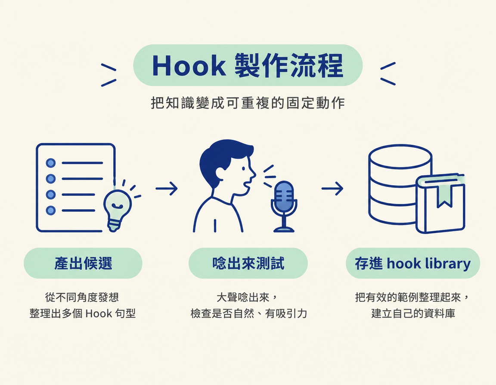

這一步把前四頁學到的 hook 知識，接成一套可以重複使用的流程：用 /hooks 為一支腳本產出三個不同句型的 hook，大聲唸出來測試，再把好 hook 收進自己的 hook library。Hook 就是內容一開始用來吸引觀眾、讓他們願意繼續看的開場。
開始前，你需要一個內容點子，最好也知道它從哪裡來。另外，先準備好已安裝的 /hooks skill。如果有 /tone skill，也可以一起使用。做完後，你會有三個候選 hook、一個唸得順的定稿，以及一份能持續累積的 hook library。
前面四頁，你已經了解 hook 為什麼重要、應該放在哪裡、九種句型有哪些，以及視覺 hook 怎麼使用。不過，知道這些還不等於能持續做出好內容。這一頁要把知識變成固定動作：先產出候選，再唸出來測試，最後把好例子存進自己的資料庫。

除了內容點子，開始前還要準備以下工具與素材：
/hooks skill。課程的 /hooks 收錄九種句型、bonus 視覺 hook 和課程範例；你加入自己的例子後，它也會越來越好用。/tone skill（如果有的話），用來讓 hook 聽起來像你平常說話。先把點子交給 /hooks。複製下面這段指令，將中括號中的文字換成你的內容。它會先確認 /hooks 是否已安裝，再用三種不同句型各寫一個 hook，並簡單說明為什麼適合。
"""Suggest hooks for my idea with /hooks. My idea: [one line, plus the link it came from if I have one]
1. Read my /hooks skill first. If it isn't installed, tell me and stop there.
2. If you can't tell from my idea, ask me who it's for and what they get by the end, one at a time.
3. Give me 3 hooks in 3 different shapes, each short enough to say out loud in about 3 seconds, with one line on why that shape fits.
4. Write them the way I talk, with my /tone skill if I have one.
5. Let me pick, mix or rewrite one, and remember what I picked so your next suggestions get closer."""你預期會看到三個不同句型的 hook，每個都短到大約三秒內能唸完，後面各附一行適用理由。如果 /hooks 還不知道觀眾是誰、觀眾最後會得到什麼，它應該先逐一詢問，而不是直接猜答案。
拿到候選 hook 後，先別急著定稿。課程的「Recommended Action」只有一句，講師也說這是他唯一給的建議：
🚀 Recommended Action: say every hook out loud, and cut any word you stumble on.
把每個候選都大聲唸一遍。只要某個字讓你卡住或唸得不順，就刪掉或換個說法，不要勉強保留。你要聽的是自己的嘴巴，而不只是看螢幕上的文字：唸起來卡卡的地方，觀眾聽起來也可能不順。把唸得順的版本留下來，作為定稿候選。
如果你已經有完整腳本，就改用下面這段指令。它會先列出九種句型，再說明哪一種最適合你的腳本、理由是什麼。接著，它會用那種句型寫出三個 hook，並建議第一幀畫面要呈現什麼。
"""Find the right hook for my script with /hooks. Here is my script: [paste it here]
1. Read my /hooks skill first. If it isn't installed, tell me and stop there.
2. Ask me these one at a time and wait for each answer: who this is for, and the one real result or proof the video delivers (never make one up).
3. Name the 9 hook shapes, then tell me which one fits my script best and why, in one line.
4. Write 3 hooks in that shape, short enough to say out loud in about 3 seconds, and tell me what my first frame should show.
5. Let me pick one, then put it at the top of my script."""你預期會先被問兩件事：「這支影片是給誰看的？」以及「影片會交出什麼真實結果或證據？」指令也明確要求不能編造。之後，/hooks 會列出九種句型，挑出最適合的一種，寫出三個同句型的 hook，並建議第一幀要呈現什麼。選定一個後，就把它放到腳本最上方。
收集好例子不是一次性任務，而是可以長期維持的習慣。滑動態牆時，只要遇到一篇讓你停下來看的貼文，就先 bookmark 起來，再用下面這段指令把它加入 /hooks：
"""Add this hook to my /hooks library: [paste the link, or describe the post]
1. Look at the first few seconds and write down the hook word for word, with the creator and the link. If you can't open it, tell me and I'll paste the words.
2. Tell me which of the 9 shapes it is. If it's a new shape, give it a short name and a one-line definition.
3. Add it to my /hooks skill as an example (or as a new shape), so you can suggest it next time.
4. Tell me in one line how I could use this shape for my own topic."""你預期會得到一份包含 hook 原文、創作者和連結的紀錄。/hooks 也會判斷它屬於九種句型中的哪一種；如果是新句型，就替它取個簡短名稱並寫下一行定義，最後把例子加入 /hooks，供下次參考。
課程提醒，你現在不只是內容消費者，也是內容生產者。用優化過的 niche 帳號滑動態牆，演算法就會把最新趨勢和 hook 帶到你面前。你也可以追蹤專門拆解爆紅格式的帳號，例如課程提到的 Postprotocol。他們會把爆紅格式和後來仿用它的內容並排呈現。
最後要記住：hook 是一個承諾，後面的內容必須兌現。尤其是 shorts，如果你承諾觀眾「三分鐘內學會」，就要在影片結束前真的教會他們。若內容沒有做到，賠上的會是你當創作者和教育者的信譽。
這種影響會一路累積：一次沒有兌現承諾，就可能讓觀眾下次更難相信你。因此，挑 hook 時不只要選合適的句型，也要確認你的內容真的能做到它說的事。
把 hook 變成可重複的流程，可以照這五步做：用 /hooks 為點子產出三個不同句型的候選。接著把每個候選大聲唸出來，刪掉會讓你結巴的字，留下唸得順的版本。如果已有完整腳本，就請 /hooks 列出九種句型，挑出最合適的一種。平常把讓你停下來看的貼文 bookmark 起來，再用第三段指令存進 hook library，也可以追蹤會拆解爆紅格式的帳號。最後確認內容能兌現 hook 許下的承諾。同一週稍晚，RUBRIC Scripts 也會直接使用 /hooks，為每一支腳本產出三個 hook。
這一頁聚焦在實際操作。九種句型的原理，以及為什麼影片表現有一半取決於包裝，前面幾頁已經說明。完成這一輪後，你會有第一份 hook library 的雛形。之後每次發布，都能再把適合的例子加進去。